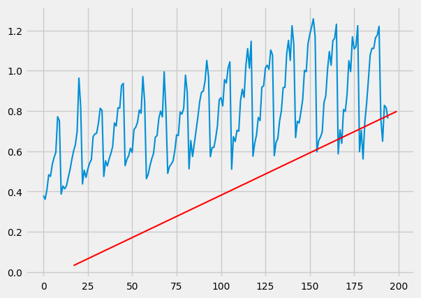

Part 1 - What are ARIMA models and how do they work?
Here, we will learn what ARIMA models are, how they work, and how they can be useful; we will also implement an Autoregressive model from SCRATCH!
As in the previous lessons, you probably learned what Autocorrelation is and how it works. Well, the idea of autocorrelation can come in useful when we are talking about predicting a certain function. Please also make sure that you have read the Gradient Descent lesson and/or have a solid understanding of Linear Regression.
So what, if any, does ARIMA stand for?
ARIMA stands for an AutoRegressive, Integrated, Moving Average. But what do each of these terms mean?
Autoregression
We can take the fundamental theory of autocorrelation and combine it with the ideas of Regression & Gradient Descent and arrive at something called Autoregression. In simple words, autoregression is like linear regression, but it runs the regression algorithm on sections of data, at once, unlike a linear regression, which runs a regression in a pair of values.
In equation terms: \(y_t = \phi_1 \cdot y_{t-1} + \phi_2 \cdot y_{t-2} + ... + \phi_p \cdot y_{t-p} \tag{1}\)
This basically means that the current y value will equal some relationship between the past p-lagged values. But what do I mean when I say lagged? Well, all I mean by that is the past p values, where p can be any number greater than zero, but less than (or equal to) n (the length of the data). Can you see why we call it lags?
What equation 1 represents, is something called an AR(p) model, or an autoregressive model of order p. Simply put, this is basically a multiple regression model.
Integration
I hope you viewed the previous lesson on Stationary time series and differencing. In this context, Integrating means to make a non-stationary time series, stationary via differencing (again, if you are confused, please view the previous lesson).
Moving Average
As you were probably introduced to in Parts 1 and 2 for Autocorrelations, you should know what a moving average model is and how to implment one.
Really, the ARIMA model is made up of two different models, an autoregressive model and a moving average model. For this post, we will implement an autoregressive model using basic math principles we learned in the gradient descent & linear regression lesson to make a multiple regression (autoregressive) model.
Autoregression from scratch
In this section, I will share my first attempt at making my own autoregression model. I will walk you through how it works, its flaws, and how we could make it better.
As always, we will be using the same dataset we used previously:
#installations
!pip install skforecast
# Data manipulation
# ==============================================================================
import numpy as np
import pandas as pd
from skforecast.datasets import fetch_dataset
# Plots
# ==============================================================================
import matplotlib.pyplot as plt
plt.style.use('fivethirtyeight')
plt.rcParams['lines.linewidth'] = 1.5
plt.rcParams['font.size'] = 10
# Data download
# ==============================================================================
data = fetch_dataset(name='h2o_exog', raw=True) #this dataset is on australian health system, from 1991 to 2008. This is from Hyndman (2023) fpp3
#Monthly expenditure ($AUD) on corticosteroid drugs that the Australian health system had between 1991 and 2008. Two additional variables (exog_1, exog_2) are simulated.
# Data preparation
# ==============================================================================
data = data.rename(columns={'fecha': 'date'})
data['date'] = pd.to_datetime(data['date'], format='%Y-%m-%d')
data = data.set_index('date')
data = data.asfreq('MS')
data = data.sort_index()
#data.head()
data = data.y
So, now that we have eveything configured, I want to show you the autoregressive function I made, and I will walk you through it:
from pandas.plotting import lag_plot
def auto_regressive(xs, ys, learning_rate, epoch, p):
assert len(xs) == len(ys)
beta = [0 for _ in range(p)]
bias = 0
for e in range(epoch):
count = 0
error_sum = 0
error = 0
for start in range(len(xs)):
error = 0
if (start >= p): #and start <= len(xs)):
batch_xs = xs[start-p:start]
#print(start, batch_xs)
batch_ys = ys[start]
count += 1
for i in range(len(batch_xs)):
error += batch_xs[i]*beta[i]
error += bias
error -= batch_ys
#print(count)
for b_i in range(len(beta)):
beta[b_i] -= learning_rate*(2*xs[start-p]*error)/count
bias -= learning_rate*(2*error)/count
#print(beta)
return beta, bias
So first, the function takes in the input, training x-values and y-values, learning rate (refer to the gradient descent lesson), an epoch size (which is how many times we are going to run our algorithm, or update the weights), and p (which is our lag length).
Next, we make an array of weights, called beta. This are our coefficients in our autocorrelation function, below.
\[y_t = \beta_1 \cdot y_{t-1} + \beta_2 \cdot y_{t-2} + ... + \beta_p \cdot y_{t-p} \tag{1}\]As said before, we run our algorithm in an epoch for loop that represents how many times we update betas.
The Algorithm
The next part is where the regression happens. First, we need to run the regression in a moving window, of length p; we start at x = p (because we can’t run a regression for values less that p).
for i in range(len(batch_xs)):
error += batch_xs[i]*beta[i]
error += bias
error -= batch_ys
The first thing we do is calculate the error across our window, which we do by calculating our prediction:
for i in range(len(batch_xs)):
error += batch_xs[i]*beta[i]
error += bias
and then subtracting the actual value, batch_ys.
Now that we have our error, we will run a gradient descent algorithm on that error value. If we do the partial-derivative math to see how each beta will effect the error, you should get something like this: \(\frac{\partial \text{MSE}}{\partial b_i} = \lim_{h \to 0} \frac{(\sum_{i=0}^n (y_{i} - (b_{i-p} \cdot x_{i-p}))^2 +\ldots+ (y_{i} - ((b_{i}+h) \cdot x_i))^2) - (\sum_{i=0}^n (y_{i} - (b_{i-p} \cdot x_{i-p}))^2 +\ldots+ (y_{i} - (b_{i} \cdot x_i))^2)}{h}\)
which after you do the math, becomes:
\[\frac{\partial \text{MSE}}{\partial b_i} = \frac{2}{n} \cdot \sum_{i=p}^n x_{t-i} \cdot (x_{t-p}\cdot b_{t-p} +\ldots +x_{t-i}\cdot b_{t-i} - y_t)\]In code, here is how it would look like:
for b_i in range(len(beta)):
beta[b_i] -= learning_rate*(2*xs[start-p]*error)/count
bias -= learning_rate*(2*error)/count
We adjust our coefficients (an array of betas) and our bias (using a very similar partial derivative as shown above, but instead for a constant variable).
Now, this function assumes our data is passed in a specific format, and I made a separate function that will handle that:
def prepare_data(data, order):
X, y = [], []
for i in range(order, len(data)):
X.append(data[i - order:i])
y.append(data[i])
return np.array(X), np.array(y)
Here, we simply get our original data and split it into x and y batches, of length order (our lag amount).
Below is the code for running this function on our data:
x = []
y = []
#lag_plot(data)
new_data = data
for i in range(len(new_data)):
x.append(i)
y.append(new_data.iloc[i].item())
#print(type(data.iloc[i]))
p = 12
be, bias = auto_regressive(x[12:], y[12:], 0.0001, 100, p)
print(be)
print(bias)
plt.plot(x, y)
x_lag = []
y_lag = []
def sum_of_array(arr):
sum = 0.0
for num in arr:
sum += num
return sum
for i in range(len(x)):
if i >= p:
#y_lag.append(sum([be[j-i+p] * x[j] for j in range(i-p, i)]))
y_lag.append(sum_of_array([be[j-i+p] * x[j] for j in range(i-p, i)])+bias)
print(y_lag)
#plt.plot(list(np.arange(0, 2, .01)), [be[i]*x_lag[i] + be[i]*x_lag[i] for x in np.arange(0, 2, .01)], color="red")
num = .05+(p*.01)
plt.plot(list(np.arange(17, 200, 1)), y_lag, color="red")
which you should get something like this: 
Woops!! What’s going on here!!!
Well, I did some investigations, and I suspect it’s due to how python handles float operations. And during our gradient descent operation, the numbers are either getting too large or small and are not being handled properly. Thus, you end up with a bunch of zeros, which is not what we want.
The Problem
What we want, is a library that will automatically handle this heavy number arithmetic for us (because doing this from scratch would be very intensive).
NumPy to the rescue!! In the next lesson, I will show you how to utilize a free Python Library to take care of this multiplication for us.
Subscribe to Burak Ayyorgun
Get the latest posts delivered right to your inbox